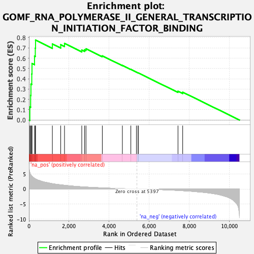
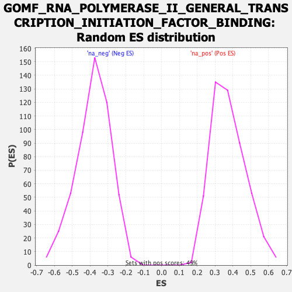

| Dataset | qlf.KOd4vsWTd4_gsea_score |
| Phenotype | NoPhenotypeAvailable |
| Upregulated in class | na_pos |
| GeneSet | GOMF_RNA_POLYMERASE_II_GENERAL_TRANSCRIPTION_INITIATION_FACTOR_BINDING |
| Enrichment Score (ES) | 0.77535784 |
| Normalized Enrichment Score (NES) | 2.0639706 |
| Nominal p-value | 0.0 |
| FDR q-value | 1.8940034E-4 |
| FWER p-Value | 0.019 |

| SYMBOL | RANK IN GENE LIST | RANK METRIC SCORE | RUNNING ES | CORE ENRICHMENT | |
|---|---|---|---|---|---|
| 1 | TCF4 | 45 | 5.465 | 0.1269 | Yes |
| 2 | NOP58 | 84 | 4.801 | 0.2385 | Yes |
| 3 | FBL | 99 | 4.608 | 0.3477 | Yes |
| 4 | NOLC1 | 141 | 4.301 | 0.4470 | Yes |
| 5 | AHR | 152 | 4.259 | 0.5483 | Yes |
| 6 | RUVBL2 | 278 | 3.501 | 0.6204 | Yes |
| 7 | ZNHIT6 | 317 | 3.351 | 0.6972 | Yes |
| 8 | RUVBL1 | 329 | 3.301 | 0.7754 | Yes |
| 9 | ESR1 | 1169 | 1.761 | 0.7376 | No |
| 10 | TBP | 1586 | 1.382 | 0.7311 | No |
| 11 | EDF1 | 1775 | 1.246 | 0.7431 | No |
| 12 | HNRNPU | 2637 | 0.745 | 0.6789 | No |
| 13 | GTF2A2 | 2779 | 0.681 | 0.6818 | No |
| 14 | TAF1 | 2847 | 0.652 | 0.6910 | No |
| 15 | GTF2F1 | 3663 | 0.378 | 0.6224 | No |
| 16 | TAF7 | 4665 | 0.131 | 0.5301 | No |
| 17 | ERCC4 | 5087 | 0.054 | 0.4912 | No |
| 18 | CTDP1 | 5364 | 0.007 | 0.4651 | No |
| 19 | AR | 5447 | -0.007 | 0.4574 | No |
| 20 | DRAP1 | 5454 | -0.008 | 0.4571 | No |
| 21 | GTF2A1 | 7441 | -0.466 | 0.2789 | No |
| 22 | ERCC1 | 7676 | -0.563 | 0.2700 | No |
